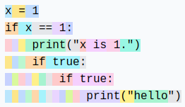

Introduction to Tokenization#
A key element of language models (LLMs) is tokenization. This is the first step in a transformer network, which involves converting text into a sequence of integers. This course is largely inspired by Andrej Karpathy’s video, Let’s build the GPT Tokenizer.
When we implemented our GPT, we used a very simple tokenizer that encodes each character with a different integer. In practice, we prefer to encode chunks of characters, i.e., groupings of characters.
Understanding how a tokenizer works is essential to grasp how a language model works.
By the end of this course, we will be able to answer these questions:
Why do LLMs struggle with spelling words?
Why do LLMs struggle with simple string operations (like reversing a string)?
Why are LLMs better in English?
Why are LLMs bad at arithmetic?
Why is GPT-2 not very good at Python?
Why does my LLM stop immediately if I send it the string “
”? Why does the LLM break when I talk to it about SolidGoldMagiKarp?
Why is it preferable to use YAML rather than JSON with LLMs?
Note: The tokenizer is a completely separate part of the LLM, with its own training dataset and trained differently.

GPT-2 Tokenizer#
Let’s start by analyzing GPT-2 tokenization via the Tiktokenizer site to understand what can go wrong. The GPT-2 tokenizer has a vocabulary of about 50,000 words, meaning 50,000 distinct tokens.
Arithmetic#
First, if we look at the arithmetic part, we quickly notice that numbers can be split into tokens in a somewhat arbitrary way. For example:

998 is a standalone token, but 9988 is split into two tokens: 99 and 88. It’s easy to imagine that counting becomes complicated for the LLM.
Identical Words, Different Tokens#
For identical words, depending on how they are written, we get different tokens.
For example:


The 4 identical words are represented by different tokens (token 198 corresponds to a newline). The model will therefore need to learn that these tokens are almost identical.
Other Languages#
For the same sentence in different languages, the number of tokens used is not the same:

This is because the GPT-2 tokenizer is trained primarily on English data. In practice, this reduces the model’s capabilities in other languages, as the context is no longer the same in terms of information. You can insert much longer text in English than in Japanese.
Python#
We can observe how the tokenizer behaves with Python code:

Each space in the indentation is counted as a token. If the code contains many conditions or loops, the context increases rapidly, making the model less effective.
Note: This issue was fixed in later versions of GPT (3 and 4), for example, a 4-tab indentation is a single token.

Note 2: The configuration of our code editor (2 or 4 spaces for Python indentation) can also influence tokenization.
Note 3: An LLM specialized in code will also have a specialized tokenizer, which improves performance.
Creating Our Own Tokenizer#
To create our own tokenizer, let’s start by seeing how to convert strings into integers.
Unicode#
One possible method is to use Unicode. This allows converting each character into an integer.
sentence="Ce cours de deep learning est génial !"
# ord() permet de récupérer le code unicode d'un caractère
unicode=[ord(char) for char in sentence]
print(unicode)
[67, 101, 32, 99, 111, 117, 114, 115, 32, 100, 101, 32, 100, 101, 101, 112, 32, 108, 101, 97, 114, 110, 105, 110, 103, 32, 101, 115, 116, 32, 103, 233, 110, 105, 97, 108]
In practice, we cannot use this method for several reasons:
To date, there are almost 150,000 characters, which is too large a vocabulary size.
There are regular updates (once a year), which would make a Unicode-based tokenizer obsolete after a year.
UTF-8#
Another possibility is to use UTF-8 encoding (16 or 32 bits would also be possible, but less practical), which allows encoding Unicode in 4 to 8 bits. By doing this, our base vocabulary size will be 256.
We keep the idea of UTF-8, but we want to increase the vocabulary size, as 256 is too small and would force LLMs to have enormous context sizes.
sentence="Bonjour"
list(sentence.encode('utf-8'))
[66, 111, 110, 106, 111, 117, 114]
Byte-Pair Encoding Algorithm#
To increase our vocabulary size, we use the byte-pair encoding algorithm. The operation of this algorithm is simple: iteratively, we find the most frequent byte pair and replace it with a new token (which increases the vocabulary by 1). For example, take the sequence:
aaabdaaabac
In the first iteration, we see that the pair “aa” is the most frequent, so we replace it with the token Z:
ZabdZabac
Z=aa
In the second iteration, we replace the pair “ab” with Y:
ZYdZYac
Y=ab
Z=aa
Finally, in the third iteration, we can replace ZY with X:
XdXac
X=ZY
Y=ab
Z=aa
We have thus increased the vocabulary while reducing the sequence size (and therefore the context needed to process it).
Note: The choice of training data has a crucial impact on the tokenizer. It must be chosen based on our objectives.
The advantage of this algorithm is that we can apply it as many times as necessary until we achieve a context size that satisfies us.
Note: The choice of training data has a crucial impact on the tokenizer. It must be chosen based on our objectives.
Applying Byte-Pair Encoding#
To illustrate the use of byte-pair encoding, let’s take a large piece of text and count the pairs. For this, we’ll use the first chapter of the first volume of La Comédie humaine by Balzac. The text was retrieved from Gutenberg.
with open('balzac.txt', 'r', encoding='utf-8') as f:
text = f.read()
print(text[:1000])
tokens = list(map(int, text.encode('utf-8')))
print(list(tokens[:1000]))
Au milieu de la rue Saint-Denis, presque au coin de la rue du
Petit-Lion, existait naguère une de ces maisons précieuses qui donnent
aux historiens la facilité de reconstruire par analogie l'ancien Paris.
Les murs menaçants de cette bicoque semblaient avoir été bariolés
d'hiéroglyphes. Quel autre nom le flâneur pouvait-il donner aux X et aux
V que traçaient sur la façade les pièces de bois transversales ou
diagonales dessinées dans le badigeon par de petites lézardes
parallèles? Évidemment, au passage de toutes les voitures, chacune de
ces solives s'agitait dans sa mortaise. Ce vénérable édifice était
surmonté d'un toit triangulaire dont aucun modèle ne se verra bientôt
plus à Paris. Cette couverture, tordue par les intempéries du climat
parisien, s'avançait de trois pieds sur la rue, autant pour garantir des
eaux pluviales le seuil de la porte, que pour abriter le mur d'un
grenier et sa lucarne sans appui. Ce dernier étage était construit en
planches clouées l'une sur l'autre comme de
[65, 117, 32, 109, 105, 108, 105, 101, 117, 32, 100, 101, 32, 108, 97, 32, 114, 117, 101, 32, 83, 97, 105, 110, 116, 45, 68, 101, 110, 105, 115, 44, 32, 112, 114, 101, 115, 113, 117, 101, 32, 97, 117, 32, 99, 111, 105, 110, 32, 100, 101, 32, 108, 97, 32, 114, 117, 101, 32, 100, 117, 10, 80, 101, 116, 105, 116, 45, 76, 105, 111, 110, 44, 32, 101, 120, 105, 115, 116, 97, 105, 116, 32, 110, 97, 103, 117, 195, 168, 114, 101, 32, 117, 110, 101, 32, 100, 101, 32, 99, 101, 115, 32, 109, 97, 105, 115, 111, 110, 115, 32, 112, 114, 195, 169, 99, 105, 101, 117, 115, 101, 115, 32, 113, 117, 105, 32, 100, 111, 110, 110, 101, 110, 116, 10, 97, 117, 120, 32, 104, 105, 115, 116, 111, 114, 105, 101, 110, 115, 32, 108, 97, 32, 102, 97, 99, 105, 108, 105, 116, 195, 169, 32, 100, 101, 32, 114, 101, 99, 111, 110, 115, 116, 114, 117, 105, 114, 101, 32, 112, 97, 114, 32, 97, 110, 97, 108, 111, 103, 105, 101, 32, 108, 39, 97, 110, 99, 105, 101, 110, 32, 80, 97, 114, 105, 115, 46, 10, 76, 101, 115, 32, 109, 117, 114, 115, 32, 109, 101, 110, 97, 195, 167, 97, 110, 116, 115, 32, 100, 101, 32, 99, 101, 116, 116, 101, 32, 98, 105, 99, 111, 113, 117, 101, 32, 115, 101, 109, 98, 108, 97, 105, 101, 110, 116, 32, 97, 118, 111, 105, 114, 32, 195, 169, 116, 195, 169, 32, 98, 97, 114, 105, 111, 108, 195, 169, 115, 10, 100, 39, 104, 105, 195, 169, 114, 111, 103, 108, 121, 112, 104, 101, 115, 46, 32, 81, 117, 101, 108, 32, 97, 117, 116, 114, 101, 32, 110, 111, 109, 32, 108, 101, 32, 102, 108, 195, 162, 110, 101, 117, 114, 32, 112, 111, 117, 118, 97, 105, 116, 45, 105, 108, 32, 100, 111, 110, 110, 101, 114, 32, 97, 117, 120, 32, 88, 32, 101, 116, 32, 97, 117, 120, 10, 86, 32, 113, 117, 101, 32, 116, 114, 97, 195, 167, 97, 105, 101, 110, 116, 32, 115, 117, 114, 32, 108, 97, 32, 102, 97, 195, 167, 97, 100, 101, 32, 108, 101, 115, 32, 112, 105, 195, 168, 99, 101, 115, 32, 100, 101, 32, 98, 111, 105, 115, 32, 116, 114, 97, 110, 115, 118, 101, 114, 115, 97, 108, 101, 115, 32, 111, 117, 10, 100, 105, 97, 103, 111, 110, 97, 108, 101, 115, 32, 100, 101, 115, 115, 105, 110, 195, 169, 101, 115, 32, 100, 97, 110, 115, 32, 108, 101, 32, 98, 97, 100, 105, 103, 101, 111, 110, 32, 112, 97, 114, 32, 100, 101, 32, 112, 101, 116, 105, 116, 101, 115, 32, 108, 195, 169, 122, 97, 114, 100, 101, 115, 10, 112, 97, 114, 97, 108, 108, 195, 168, 108, 101, 115, 63, 32, 195, 137, 118, 105, 100, 101, 109, 109, 101, 110, 116, 44, 32, 97, 117, 32, 112, 97, 115, 115, 97, 103, 101, 32, 100, 101, 32, 116, 111, 117, 116, 101, 115, 32, 108, 101, 115, 32, 118, 111, 105, 116, 117, 114, 101, 115, 44, 32, 99, 104, 97, 99, 117, 110, 101, 32, 100, 101, 10, 99, 101, 115, 32, 115, 111, 108, 105, 118, 101, 115, 32, 115, 39, 97, 103, 105, 116, 97, 105, 116, 32, 100, 97, 110, 115, 32, 115, 97, 32, 109, 111, 114, 116, 97, 105, 115, 101, 46, 32, 67, 101, 32, 118, 195, 169, 110, 195, 169, 114, 97, 98, 108, 101, 32, 195, 169, 100, 105, 102, 105, 99, 101, 32, 195, 169, 116, 97, 105, 116, 10, 115, 117, 114, 109, 111, 110, 116, 195, 169, 32, 100, 39, 117, 110, 32, 116, 111, 105, 116, 32, 116, 114, 105, 97, 110, 103, 117, 108, 97, 105, 114, 101, 32, 100, 111, 110, 116, 32, 97, 117, 99, 117, 110, 32, 109, 111, 100, 195, 168, 108, 101, 32, 110, 101, 32, 115, 101, 32, 118, 101, 114, 114, 97, 32, 98, 105, 101, 110, 116, 195, 180, 116, 10, 112, 108, 117, 115, 32, 195, 160, 32, 80, 97, 114, 105, 115, 46, 32, 67, 101, 116, 116, 101, 32, 99, 111, 117, 118, 101, 114, 116, 117, 114, 101, 44, 32, 116, 111, 114, 100, 117, 101, 32, 112, 97, 114, 32, 108, 101, 115, 32, 105, 110, 116, 101, 109, 112, 195, 169, 114, 105, 101, 115, 32, 100, 117, 32, 99, 108, 105, 109, 97, 116, 10, 112, 97, 114, 105, 115, 105, 101, 110, 44, 32, 115, 39, 97, 118, 97, 110, 195, 167, 97, 105, 116, 32, 100, 101, 32, 116, 114, 111, 105, 115, 32, 112, 105, 101, 100, 115, 32, 115, 117, 114, 32, 108, 97, 32, 114, 117, 101, 44, 32, 97, 117, 116, 97, 110, 116, 32, 112, 111, 117, 114, 32, 103, 97, 114, 97, 110, 116, 105, 114, 32, 100, 101, 115, 10, 101, 97, 117, 120, 32, 112, 108, 117, 118, 105, 97, 108, 101, 115, 32, 108, 101, 32, 115, 101, 117, 105, 108, 32, 100, 101, 32, 108, 97, 32, 112, 111, 114, 116, 101, 44, 32, 113, 117, 101, 32, 112, 111, 117, 114, 32, 97, 98, 114, 105, 116, 101, 114, 32, 108, 101, 32, 109, 117, 114, 32, 100, 39, 117, 110, 10, 103, 114, 101, 110, 105, 101, 114, 32, 101, 116, 32, 115, 97, 32, 108, 117, 99, 97, 114, 110, 101, 32, 115, 97, 110, 115, 32, 97, 112, 112, 117, 105, 46, 32, 67, 101, 32, 100, 101, 114, 110, 105, 101, 114, 32, 195, 169, 116, 97, 103, 101, 32, 195, 169, 116, 97, 105, 116, 32, 99, 111, 110, 115, 116, 114, 117, 105, 116, 32, 101, 110, 10, 112, 108, 97, 110, 99, 104, 101, 115, 32, 99, 108, 111, 117, 195, 169]
Let’s count the pairs now:
def get_stats(ids):
counts = {}
for pair in zip(ids, ids[1:]):
counts[pair] = counts.get(pair, 0) + 1
return counts
stats = get_stats(tokens)
print("Les 5 paires les plus fréquentes : ",sorted(((v,k) for k,v in stats.items()), reverse=True)[:5])
top_pair = max(stats, key=stats.get)
print("La paire la plus fréquente est : ", top_pair)
Les 5 paires les plus fréquentes : [(5025, (101, 32)), (2954, (115, 32)), (2429, (32, 100)), (2332, (116, 32)), (2192, (101, 115))]
La paire la plus fréquente est : (101, 32)
Let’s now define a function to merge the most frequent pairs:
# Fonction pour fusionner les paires les plus fréquentes, on donne en entrée la liste des tokens, la paire à fusionner et le nouvel index
def merge(ids, pair, idx):
newids = []
i = 0
while i < len(ids):
# Si on est pas à la dernière position et que la paire correspond, on la remplace
if i < len(ids) - 1 and ids[i] == pair[0] and ids[i+1] == pair[1]:
newids.append(idx)
i += 2
else:
newids.append(ids[i])
i += 1
return newids
# Test de la fonction merge
print(merge([5, 6, 6, 7, 9, 1], (6, 7), 99))
print("taille du texte avant :", len(tokens))
# On fusionne la paire la plus fréquente et on lui donne un nouvel index (256 car on a déjà les caractères de 0 à 255)
tokens2 = merge(tokens, top_pair, 256)
print(tokens2[:100])
print("taille du texte après :", len(tokens2))
[5, 6, 99, 9, 1]
taille du texte avant : 128987
[65, 117, 32, 109, 105, 108, 105, 101, 117, 32, 100, 256, 108, 97, 32, 114, 117, 256, 83, 97, 105, 110, 116, 45, 68, 101, 110, 105, 115, 44, 32, 112, 114, 101, 115, 113, 117, 256, 97, 117, 32, 99, 111, 105, 110, 32, 100, 256, 108, 97, 32, 114, 117, 256, 100, 117, 10, 80, 101, 116, 105, 116, 45, 76, 105, 111, 110, 44, 32, 101, 120, 105, 115, 116, 97, 105, 116, 32, 110, 97, 103, 117, 195, 168, 114, 256, 117, 110, 256, 100, 256, 99, 101, 115, 32, 109, 97, 105, 115, 111]
taille du texte après : 123962
With a single merge, we have already significantly reduced the text encoding size. Now, we will define the desired vocabulary size and merge as many times as needed!
vocab_size = 276 # La taille du vocabulaire que l'on souhaite
num_merges = vocab_size - 256
tokens_merged=tokens
merges = {} # (int, int) -> int
for i in range(num_merges):
stats = get_stats(tokens_merged)
pair = max(stats, key=stats.get)
idx = 256 + i
print(f"merging {pair} into a new token {idx}")
tokens_merged = merge(tokens_merged, pair, idx)
merges[pair] = idx
merging (101, 32) into a new token 256
merging (115, 32) into a new token 257
merging (116, 32) into a new token 258
merging (195, 169) into a new token 259
merging (101, 110) into a new token 260
merging (97, 105) into a new token 261
merging (44, 32) into a new token 262
merging (111, 110) into a new token 263
merging (101, 257) into a new token 264
merging (111, 117) into a new token 265
merging (114, 32) into a new token 266
merging (97, 110) into a new token 267
merging (113, 117) into a new token 268
merging (100, 256) into a new token 269
merging (97, 32) into a new token 270
merging (101, 117) into a new token 271
merging (101, 115) into a new token 272
merging (108, 256) into a new token 273
merging (105, 110) into a new token 274
merging (46, 32) into a new token 275
We can now see the difference between the two token sequences:
print("Taille de base:", len(tokens))
print("Taille après merge:", len(tokens_merged))
print(f"compression ratio: {len(tokens) / len(tokens_merged):.2f}X")
Taille de base: 128987
Taille après merge: 98587
compression ratio: 1.31X
We have effectively compressed the sequence size while increasing the vocabulary by only 20. GPT-2 increases the vocabulary to 50,000, so you can imagine that this drastically reduces the sequence size.
Decoding/Encoding#
Now that we have built our tokenizer, we want to be able to convert between integers (tokens) and our text.
For this, let’s first build the decoding function:
vocab = {idx: bytes([idx]) for idx in range(256)}
for (p0, p1), idx in merges.items():
vocab[idx] = vocab[p0] + vocab[p1]
# Fonction pour décoder les ids en texte, prend en entrée une liste d'entiers et retourne une chaine de caractères
def decode(ids):
tokens = b"".join(vocab[idx] for idx in ids)
text = tokens.decode("utf-8", errors="replace") # errors="replace" permet de remplacer les caractères non reconnus par le caractére spécial �
return text
print(decode([87]))
W
And the encoding function:
# Fonction pour encoder le texte en ids, prend en entrée une chaine de caractères et retourne une liste d'entiers
def encode(text):
tokens = list(text.encode("utf-8"))
while len(tokens) >= 2:
stats = get_stats(tokens)
pair = min(stats, key=lambda p: merges.get(p, float("inf")))
if pair not in merges:
break
idx = merges[pair]
tokens = merge(tokens, pair, idx)
return tokens
print(encode("Bonjour"))
# On eut véifier que l'encodage et le décodage fonctionne correctement
print(decode(encode("Bonjour")))
# Et sur le text en entier
text2 = decode(encode(text))
print(text2 == text)
[66, 263, 106, 265, 114]
Bonjour
True
Regex Patterns#
The GPT series uses regex patterns to split the text before creating the vocabulary. This allows for more control over the type of tokens generated (e.g., avoiding different tokens for “dog”, “dog!”, and “dog?”). In the source code of Tiktoken (GPT tokenizer), we can find the following pattern: ‘s|’t|’re|’ve|’m|’ll|’d| ?\p{L}+| ?\p{N}+| ?[^\s\p{L}\p{N}]+|\s+(?!\S)|\s+.
The syntax is quite complex, but we will break it down to understand what it does:
‘s|’t|’re|’ve|’m|’ll|’d: Matches English contractions like “is”, “it”, “are”, “have”, “am”, “will”, and “had”. These tokens are often important to isolate in natural language processing.
?\p{L}+: Matches words composed of letters. The “?” at the beginning means the word can be preceded by a space, allowing capturing words with or without an initial space.
?\p{N}+: Matches sequences of digits (numbers). Similarly, an optional space can precede the digit sequence.
?[^\s\p{L}\p{N}]+: Matches one or more characters that are neither spaces, letters, nor digits. This captures symbols and punctuation, with an optional space at the beginning.
\s+(?!\S): Matches one or more spaces followed only by spaces (i.e., a sequence of spaces at the end of a string or before a line break).
\s+: Matches one or more spaces. This is a generic match for multiple spaces between words.
import regex as re
gpt2pat = re.compile(r"""'s|'t|'re|'ve|'m|'ll|'d| ?\p{L}+| ?\p{N}+| ?[^\s\p{L}\p{N}]+|\s+(?!\S)|\s+""")
print(re.findall(gpt2pat, "Hello've world123 how's are you!!!?"))
['Hello', "'ve", ' world', '123', ' how', "'s", ' are', ' you', '!!!?']
The text has been split according to the conditions described in the regex pattern.
Special Tokens#
Special tokens are also added for training and fine-tuning:
<|endoftext|>: This token is used to delimit the separation between different documents in the training data.
<|im_start|> and <|im_end|>: These tokens delimit the beginning and end of a user message for a chatbot, for example.
Note: During fine-tuning, it is possible to add tokens to the tokenizer (such as <|im_start|> and <|im_end|>, for example) specific to the task you want to perform. Of course, this will require modifying the embedding matrix and retraining it.
Other Types of Tokenizers#
The tokenizer we implemented is based on OpenAI’s tiktoken, used on GPT models. Another popular tokenizer is sentencepiece, used on Google and Meta models, for example.
Note: Sentencepiece is much more complex than tiktoken and has many parameters to adjust. In practice, it is likely used because the code is open source (while the training code of tiktoken is not open-source, we only have access to the code for encoding and decoding).
Tokenization on Other Modalities?#
When we want to perform multimodal processing (which is trendy right now), we need to produce tokens from modalities other than text, such as sound or images. Ideally, we would transform our sound or image into tokens to give to the transformer as if it were text.
For images, we can use a VQVAE or a VQGAN. The idea is to use a VAE or GAN to generate discrete values in a latent space. These discrete values are then used as tokens.

Figure extracted from the article.
OpenAI’s SORA model does something similar, but for videos:

Figure extracted from the article
Answers to the Initial Questions#
We will now answer the questions asked at the beginning of the course using what we have learned:
Why do LLMs struggle with spelling words? Token splitting means that each word is not split into all its characters, but rather into chunks of characters. This makes it difficult for the model to decompose them.
Why do LLMs struggle with simple string operations (like reversing a string)? This is roughly for the same reason as the previous question. To reverse a word, it is not enough to reverse the tokens representing that word.
Why are LLMs better in English? There are several reasons for this: the transformer’s training data and the tokenizer’s training data. For the transformer, more English data allows it to better learn the language and its nuances. For the tokenizer, if it is trained on English data, the generated tokens will be primarily adapted for English words, so we will need less context than for other languages.
Why are LLMs bad at arithmetic? Numbers are represented quite arbitrarily depending on the training data. Performing operations on these tokens is not an easy task for the LLM.
Why is GPT-2 not very good at Python? As we saw in this course, the GPT-2 tokenizer converts a simple space into a token. In Python, with indentation and multiple conditions/loops, there are quickly many spaces, which significantly impacts the context.
Why does my LLM stop immediately if I send it the string “
”? This is a special token added in the training data to separate text. When the LLM encounters it, it must stop its generation.Why does the LLM break when I talk to it about SolidGoldMagiKarp? This question is a bit less obvious, and I recommend reading the excellent blogpost. In simple terms, if words are present in the tokenizer’s training data but not in the LLM’s training data, then the embedding of this token will not be trained at all, and the LLM will behave randomly when it encounters this token. SolidGoldMagiKarp is a Reddit user who must have appeared regularly in the tokenizer’s training data but not in the transformer’s training data.
Why is it preferable to use YAML rather than JSON with LLMs? This is a bit like with Python. The GPT-2 tokenizer (and most models, for that matter) converts a JSON document into more tokens than its YAML equivalent. Switching from JSON to YAML thus reduces the context needed to process the document.